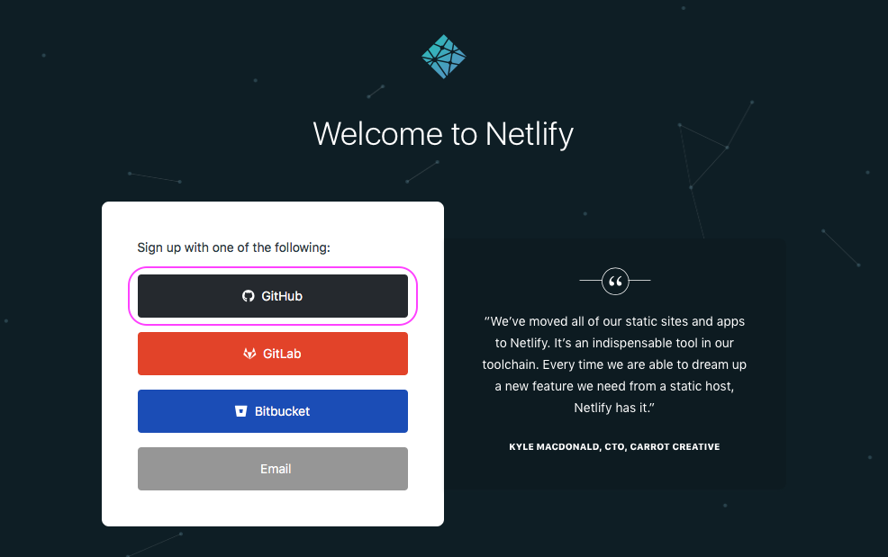
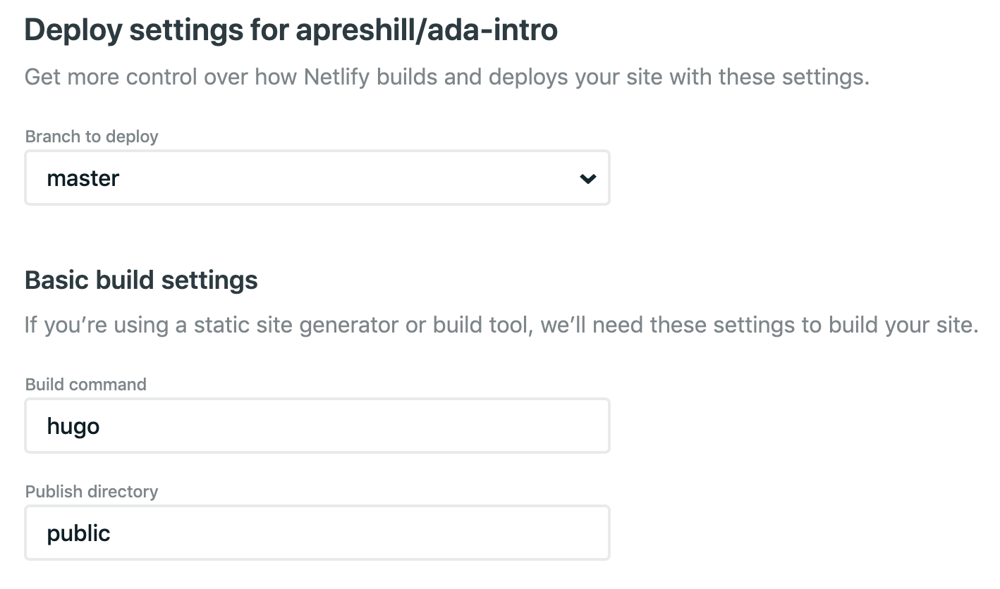
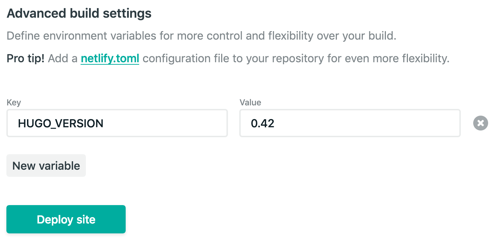

The netlify.toml File
By Alison Hill in Theme Features R
February 20, 2019
“Just a spoonful of Hugo helps the blog go down.”
- me, only somewhat kidding
You can read the previous post about my “Spoonful of Hugo” series here. In this series, I’m sharing small spoonfuls of Hugo that I have learned that hopefully can help you get your site UP (and even better- more efficient, more streamlined, more automated).
This is my second post in this series, and it is a relatively quick one. Just do this. This one is a no-brainer.
Use Netlify to Deploy
First, you’ll need to use Netlify! I am a very happy Netlify user and currently have approximately 33 sites deployed. To setup a new account, navigate to Netlify and click on the Sign Up link.

Sign up with GitHub to connect your GitHub and Netlify accounts (as shown below).

If you use a different version control service, select GitLab or BitBucket instead.
The last step is to use the Netlify UI in browser do New Site from Git > pick your repo. You’ll be prompted to fill in these fields, they are probably already filled in correctly for you:

The next part is the advanced build settings:

See that pro tip about the netlify.toml? Let’s do that! You can leave these fields as is.
Why netlify.toml?
In their Build Gotchas:
“If your build works locally, the next debugging step is to ensure the package versions we use to build match yours. You can find the settings for these in the Build Settings doc. That‚Äôs the leading cause of build failure.”
Yes that is right- package version mismatches are the leading cause of build failure with Netlify. What does this look like for blogdown users? This means that you are running a version of Hugo locally that doesn’t match the version that Netlify is using to build your site. Most of the time, you are using a more recent version of Hugo than the one Netlify uses. This means that the files your theme relies on may be using newer Hugo functions that were introduced in later Hugo versions- functions that Netlify won’t be able to find working from an older Hugo version. You’ll get all the build errors.
You can check your local Hugo version by running this code in your R console:
blogdown::hugo_version()
## [1] '0.80.0'
Now, we want Netlify to use this same version of Hugo when it builds your site. You can do this two ways:
- Do this in your browser (üëé)
- Do this in your project root directory in a netlify.toml file (üëç)
Add the netlify.toml File
Adding this file means that team members can see for themselves what version of Hugo you are running- if it is buried in the Netlify UI, you can’t see that information unless you sift through the public build logs (no thanks). Making the file as plain text in the root of your blogdown project directory means that:
- it is version controlled (yay!) and
- other people who use/learn from/contribute to your blog can actually reproduce your site with the same site configuration.
- Bonus: you can set the Hugo versions for branch deploys too.
Here is an example from my own netlify.toml file^[the leading zero matters for Hugo versions, so 0.53 works but .53 will not. For versions >= 0.54.0, the trailing zero also matters, so 0.54.0 works but 0.54 will not.]:
[build]
publish = "public"
command = "hugo"
[context.production.environment]
HUGO_VERSION = "0.54.0" # if older, use format: 0.53 (no trailing zero)
HUGO_ENV = "production"
HUGO_ENABLEGITINFO = "true"
[context.branch-deploy.environment]
HUGO_VERSION = "0.54.0" # if older, use format: 0.53 (no trailing zero)
[context.deploy-preview.environment]
HUGO_VERSION = "0.54.0"
You can leave off the last two chunk if you don’t want to use branch deploys or preview deploys, but I ‚ù§Ô∏è these two Netlify features and encourage you to try them out. I’ve starting drafting individual blog posts and tutorials in branches, and then I can see them rendered and share them for feedback without asking collaborators to clone and build the repository locally. It is lovely. Every branch and pull request gets a link üéâ.
So add this file to your blogdown site repo and push to GitHub.
Note that, according to the Netlify docs:
“During a build, the following ordering determines which context covers a particular deploy: UI settings are overridden if a netlify.toml file is present in the root folder of the repo and there exists a setting for the same property/redirect/header in the toml file.”
If you look in your site’s Netlify deploy log, you should see entries like this:
7:47:13 PM: Found netlify.toml. Overriding site configuration
7:47:13 PM: Starting build script
7:47:13 PM: Installing dependencies
7:47:14 PM: Started restoring cached node version
7:47:17 PM: Finished restoring cached node version
7:47:18 PM: v8.15.0 is already installed.
7:47:19 PM: Now using node v8.15.0 (npm v6.4.1)
7:47:19 PM: Attempting ruby version 2.3.6, read from environment
7:47:20 PM: Using ruby version 2.3.6
7:47:20 PM: Using PHP version 5.6
7:47:20 PM: Installing Hugo 0.54.0
Success!